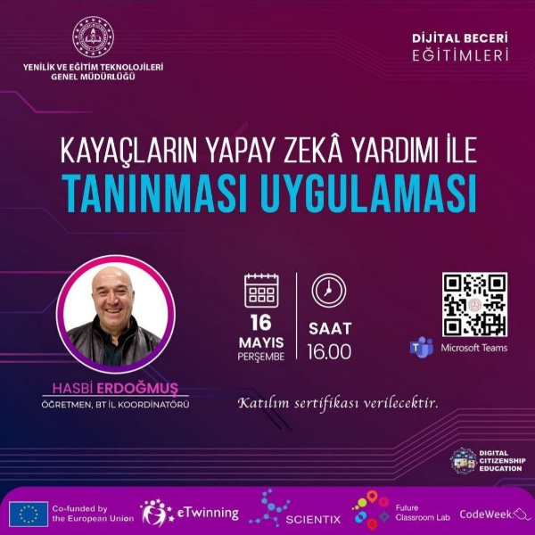
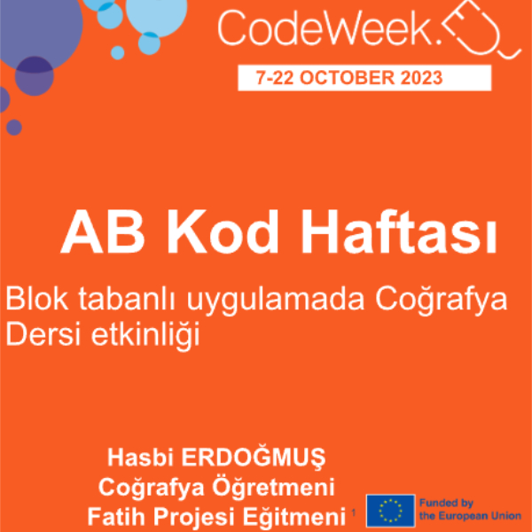
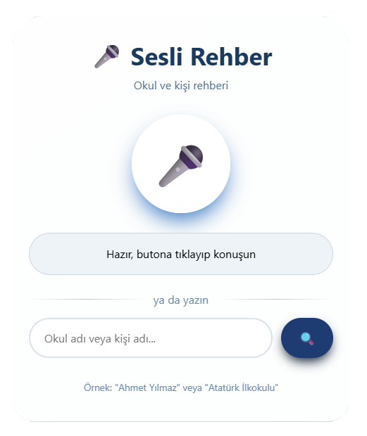

Yapay Zeka Çalışmaları
Teori ve Uygulama: Eğitimde AI Dönüşümü
Geleceği Tasarlamak
Bu sayfada, yapay zekanın (YZ) eğitimdeki dönüştürücü gücünü ve coğrafya bilimiyle olan stratejik entegrasyonunu sergileyen düzeydeki çalışmalarım yer almaktadır. Amacımız, öğrencileri teknolojinin sadece tüketicisi değil, üreticisi ve yönlendiricisi konumuna taşımaktır.

Nesne Tanıma & Kayaçlar
Makine ÖğrenmesiFarklı kayaç türlerini görsel olarak tanıyan YZ modelinin geliştirilmesi.

AB CodeWeek Sunumu
Blok Tabanlı KodlamaMekansal Matematik.

Sesli Telefon Rehberi
Python & TTSPython (Flask) ve Google TTS ile geliştirilen uygulama, aracılığı ile telefon rehberine sesli komut verek aranacak kişiyi bulunur ve arama gerçekleştirilir. Kişisel verilerin korunması kanunu gereği, proje burada paylaşılamamaktadır.
Tahminsel Analiz (GEE)
Büyük Veri & YZGoogle Earth Engine üzerinde makine öğrenmesi ile afet risk analizleri. Google sununucuları kullanım başına ücretlendirme yaptığı için proje burada paylaşılamamaktadır.